Problem
Irish clothing is crowded with heritage, Gaeilge and county brands. GUAIRE needed its own territory, and a pre-launch site that sells a feeling before anyone can buy a tee.
What I did
Mapped eight Irish competitors to find the gap: everyday modern Irish life. Structured the site as a day in that life (The Day, The Night, The Morning After), set a black-and-white system with small touches of green and gold, and designed the drop as a late-night chipper menu screen. Built four product pages with a back / front / both view switcher, plus reduced-motion and keyboard support throughout.
Designed the first run of graphic tees, each built on an everyday Irish reference: a road sign in Irish, a pint, a GAA pitch line, a 2000s mobile phone and the late-night shop sign. Then built photo-real front and back mockups in Photoshop, with worn print textures, to show the range as it would look for real.
Outcome
Live on Vercel with four product pages and a guest list for the Drop 01 launch, redesigned in fast iterations as the brand direction sharpened.
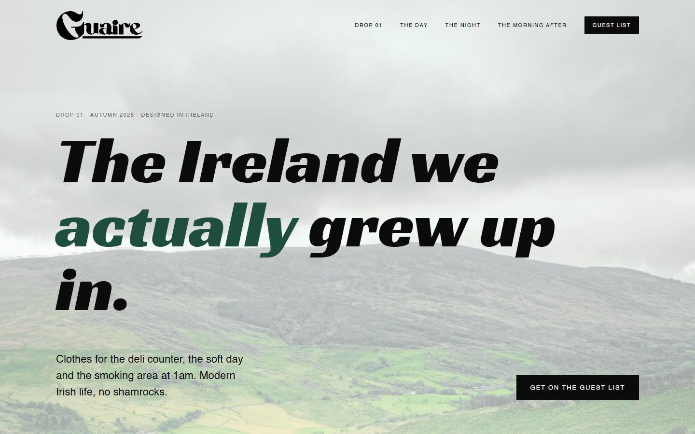
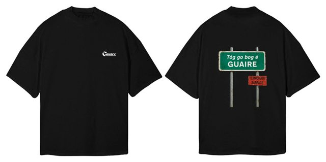
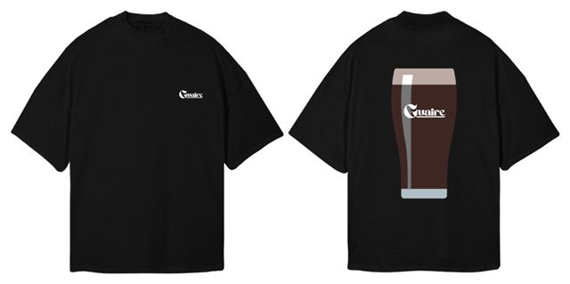
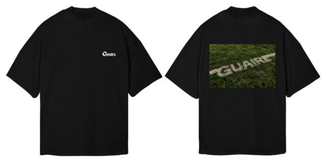
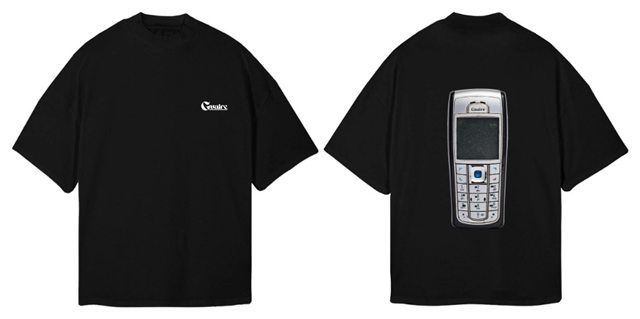
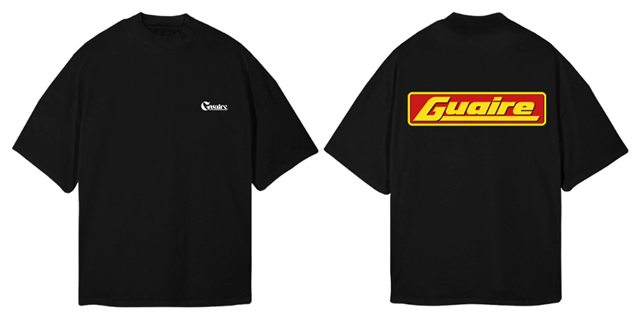
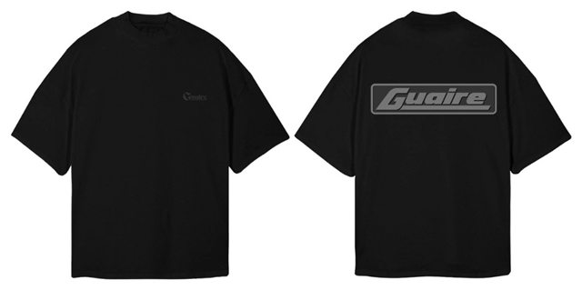
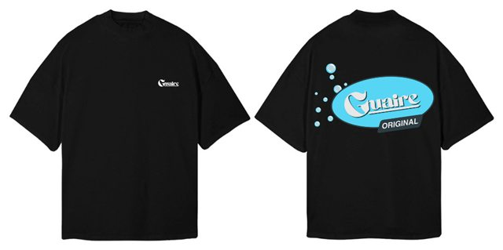
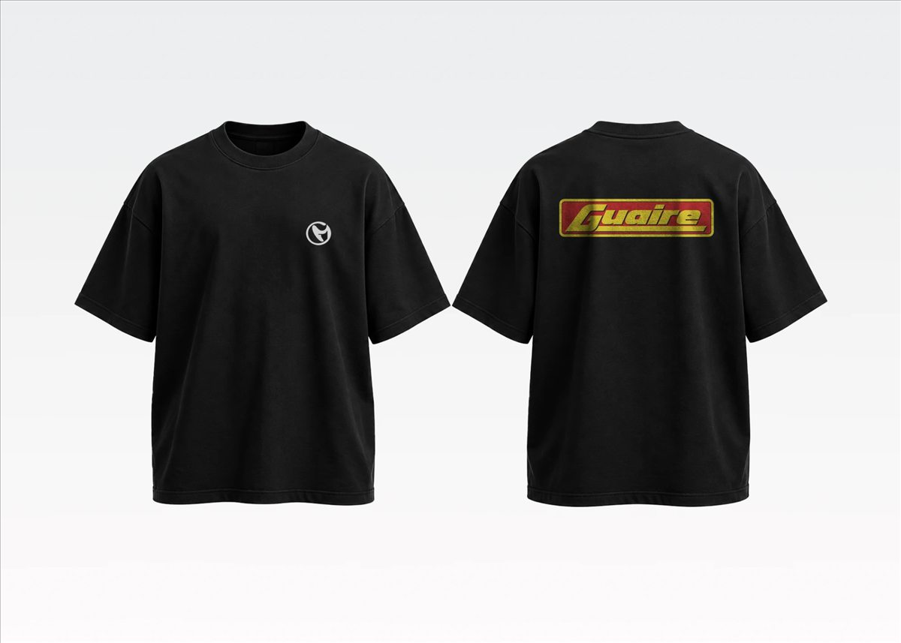
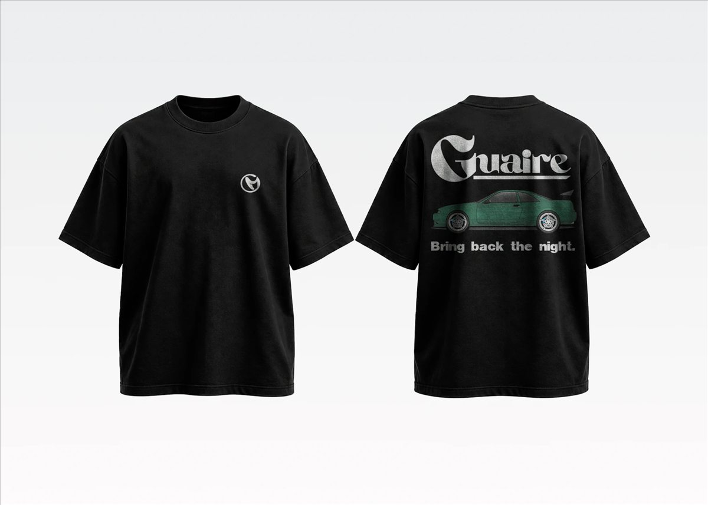
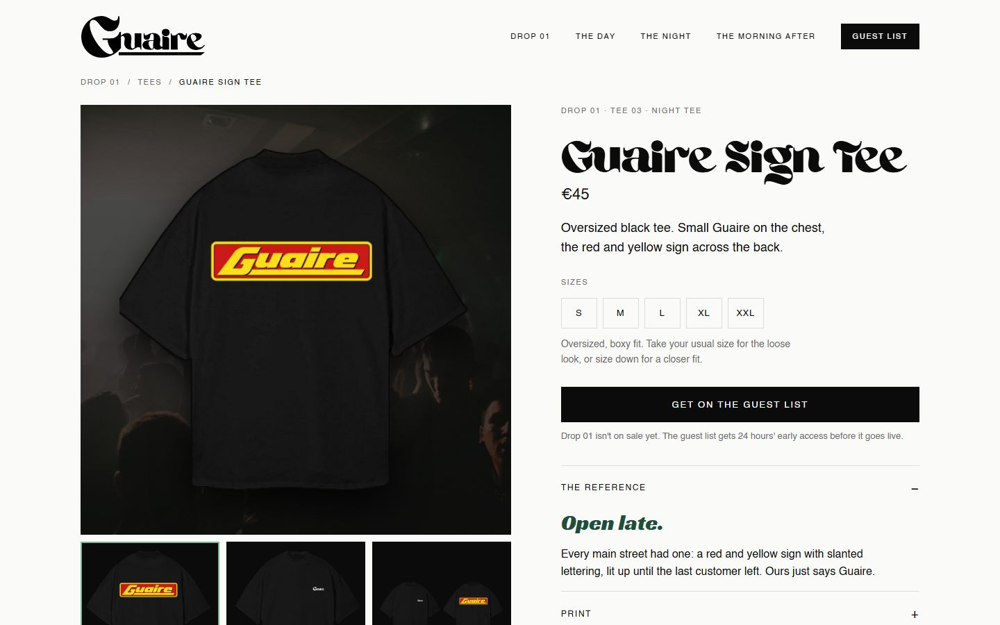
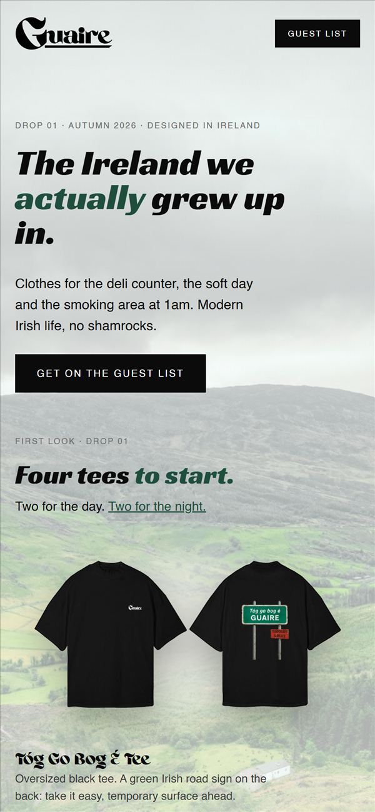